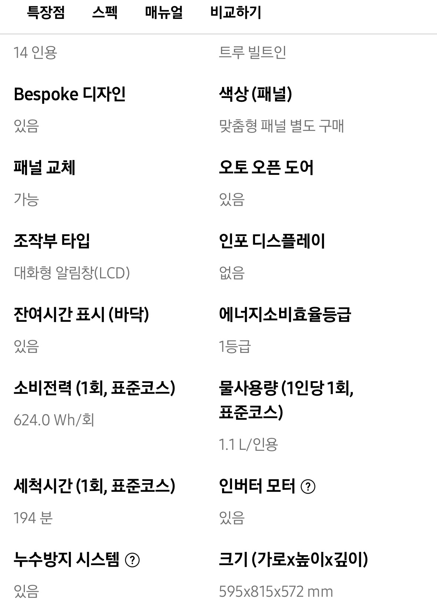
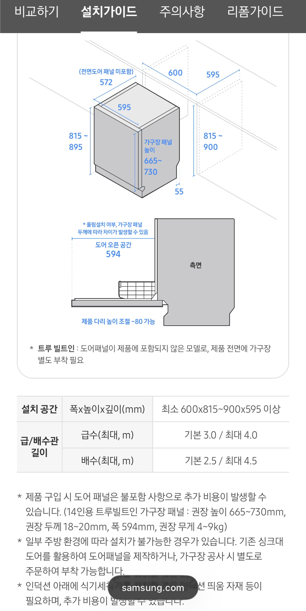
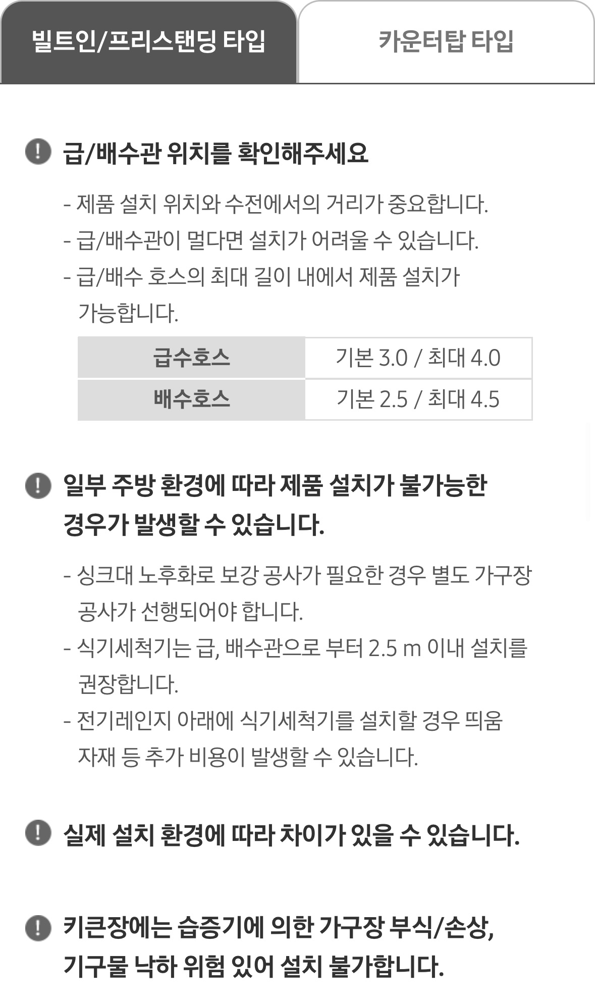
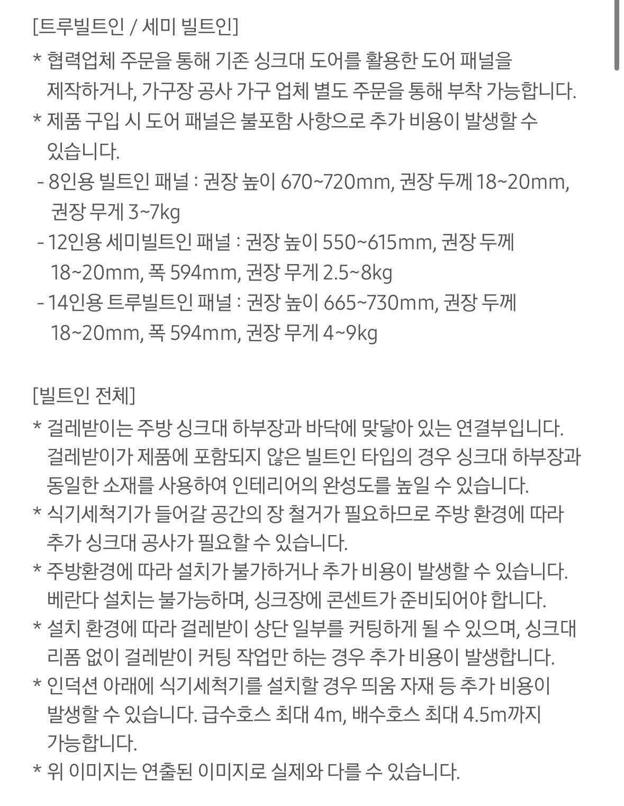
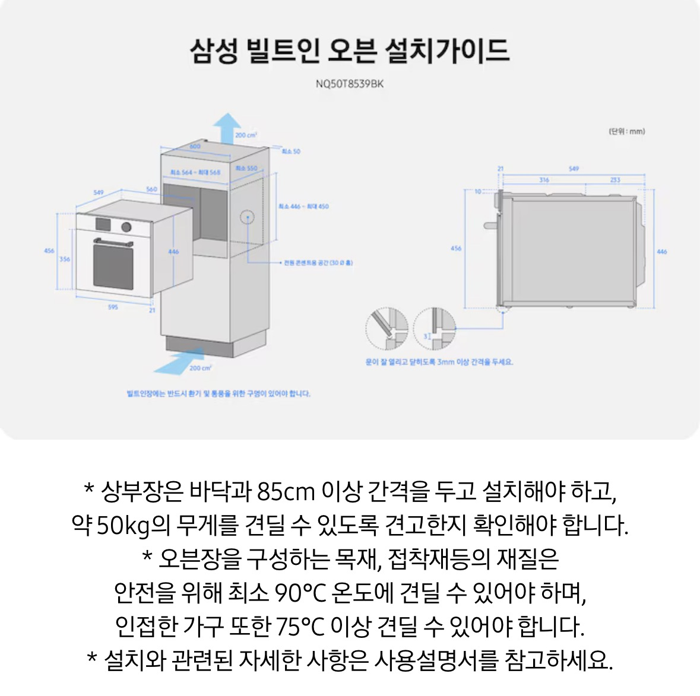
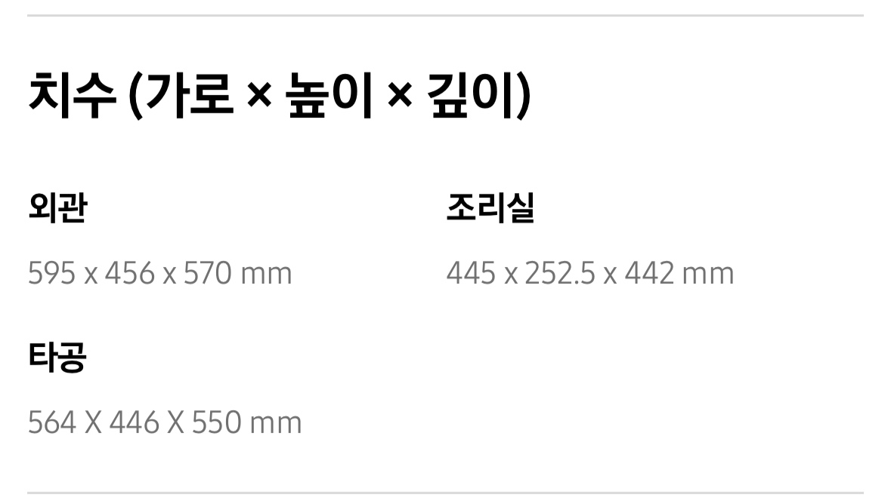
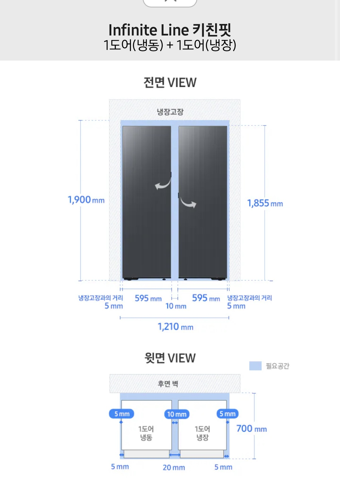
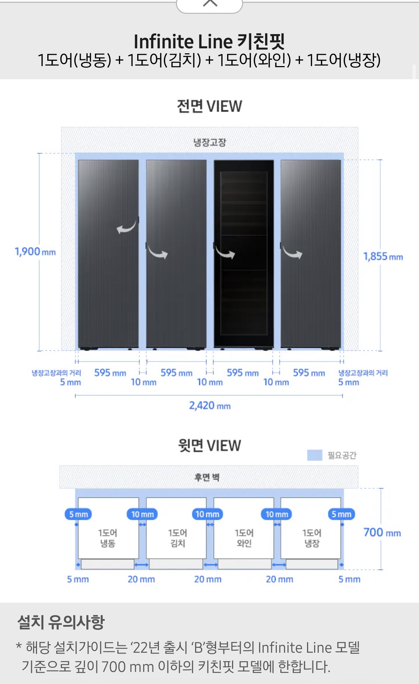

손그림 기준으로 정리한 가구 평면도·입면도·3D. 치수(mm)는 data.js의 KITCHEN에서 수정합니다.




⚠ 싱크대·가구 시공 시 확인: (1) 식세기 자리 크기 600×815~900×595 이상 확보 · 도어 패널 폭 594mm · 높이 665~730mm · (2) 급수관은 최대 4m, 배수관은 2.5m 이내 권장 · (3) 인덕션 바로 아래 배치 시 띄움 자재 별도 필요 · (4) 도어 패널은 국선디자인(목공)이나 영림 가구업체에 별도 주문 (권장 무게 4~9kg).
⚠ 정수기 시공 확인: (1) 파우셋 위치는 싱크대 상판 타공(25Ø · 상판 40mm 이하) 필요 · (2) 본체는 싱크대 하단 or 옆 장 설치 (파우셋과 1.5m 이내) · (3) 이동 통로에 급배수 호스 가로지르는 독립 아일랜드 식탁 구조엔 설치 불가 · (4) 급배수관이 외부로 노출되는 구조는 안전상 불가.


⚠ 오븐 가구 시공 시 확인: (1) 오븐 타공 564~568 × 446~450 × 550mm 확보 · 문 간격 3mm 이상 · (2) 상단 통풍구 200cm² 이상 필수 (환기 안 하면 과열) · (3) 상부장은 오븐과 85cm 이상 간격 · 약 50kg 무게 지지 가능해야 · (4) 오븐장 구성 목재·접착재는 최소 90℃ · 인접 가구는 75℃ 이상 내열 재질 필수 · (5) 전용 콘센트 30Ø 공간 확보.


⚠ 냉장고장 시공 시 확인: (1) 각 도어 폭 595mm · 도어 사이 이격 10mm · 좌우 벽 이격 5mm · (2) 필요 깊이 700mm (도어 개폐 감안) · 냉장고장 내부 높이 최소 1,855mm (본체 높이 여유) · (3) 냉장고장 뒷면 벽까지 필요공간 20mm (통풍) · (4) '22년 출시 'B'형부터의 Infinite Line 모델 기준 (깊이 700mm 이하 키친핏 한정).
⚠ 인덕션 시공 시 확인: (1) 상판 타공 560×480mm · 상판 두께에 맞춰 세로 타공 깊이 확보 · (2) 하단에 식기세척기 배치 시 띄움 자재 별도 필요 · (3) 전용선 (단독배선) 시공 필수 — 전기 체크리스트에 이미 포함.
⚠ 세탁·건조기 시공 시 확인: (1) 자리 크기 가로 686mm · 높이 1,890mm · 깊이 875mm 확보 (도어 개폐 여유 별도) · (2) 무게 176kg — 발코니 바닥 하중 확인 · 방진매트 권장 · (3) 전원 220V/60Hz · 세탁 시 2100W · 건조 시 2300W — 단독 배선 권장 · (4) 급수·배수·수도꼭지 위치 확인 · 인버터 히트펌프+히터라 배기(닥트) 불필요.